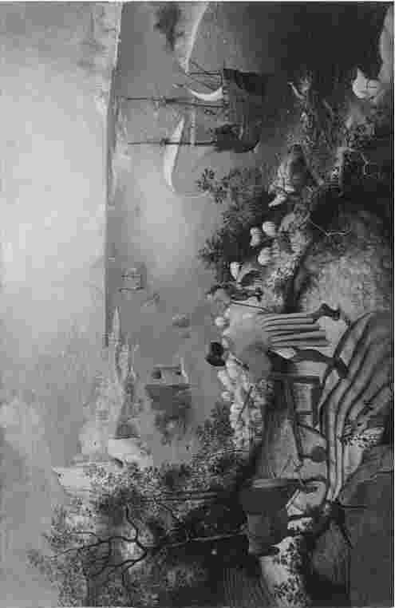

（冰激凌摊贩，摘自马尔科姆·普莱斯，《阿伯里斯特维斯，我的爱》）
医学伦理学会引起各种人的兴趣：既有思想家，也有实干家；既有哲学家，也有男男女女的活动家。它涉及一些重大的道德问题：例如安乐死和杀人的道德压力。它还将我们领入了政治哲学的领域。受到必然限制的卫生保健资源应当如何分配？决策程序应当是怎样的？医学伦理学还与法律问题相关。医生实施安乐死总是一种犯罪行为吗？什么时候才能违背一个精神病人的意愿对其进行治疗？此外，医学伦理学还探讨了一个值得关注的世界性议题，即富国与贫国之间的正确关系。
现代医学创造了新的道德选择，并给我们已有的传统观点带来了挑战。克隆给许多电影带来了灵感，也给人们带来了很多担忧。创造半人半兽生物的可能性已经离我们不远了。生殖技术引出了一个很抽象的问题：我们应当如何考虑那些尚未出生——也可能从不会存在的生命的利益？这个问题让我们从医学以外的角度来考虑我们应对人类的未来承担的责任。
从形而上学到日常实践都属于医学伦理学的范畴。医学伦理学不仅涉及这些大问题，而且也涉及日常的医学实践。医生与人们的性命密切相关，日常生活中充满了道德压力。一位有些痴呆的老年妇女患上了一种急性的、危及生命的疾病。是应该让她在医院里接受所有现有的药物和技术治疗，还是应该让她舒服地待在家里养病呢？一家人无法达成一致。这件事可能根本无法上头版头条；但是，正如奥登笔下的古典画家所认为的那样，大多数时间里，对于大多数人来说平常的事就是重要的事。我们在从事医学伦理学研究时，必须准备好与理论进行抗争，花时间思考并发挥想象力。但是我们还必须做好务实的准备：能够采用一种严肃、切实的方法。
我自己对于医学伦理学的兴趣是从理论开始的，当时我在读一个有哲学课程的学位。但当我进入医学院以后，我的爱好更多地偏向了实用。决定总是要做的，病人也总是要救助的。我被训练成了一位精神病医生，伦理学在我作为医生和临床学家的工作中仅成为了我的一丝兴趣。随着临床经验的积累，我越来越清楚地意识到伦理价值是医学的核心。我的训练中强调得比较多的是临床决策中应用科学依据的重要性。很少有人会想去论证，更不会有人注意到这些决策背后的伦理假设的正确性。因此我更多地向医学伦理学靠拢，期待医学实践以及患者能从伦理学推理中受益。我喜欢高度理论化的东西，也喜欢从事回到普遍性与抽象性的纯粹推理，但同时我也密切关注着实践的发展。我还探讨了非同一性问题（第四章）这一哲学“雷区”，因为我相信这一问题与医生和社会需要做出的决定是相关的。

图1 医学伦理学与农夫相关，也与伊卡洛斯（刚好能看见他的双腿消失在大海中）相关。勃鲁盖尔，《伊卡洛斯》（1555）。
哲学家与文化历史学家以赛亚·柏林对托尔斯泰的一篇评论开头如下：
柏林随后提出，打比方来说，狐狸与刺猬之间的差别可以标示出“作家与思想家之间最深刻的区别之一，而且这个区别也许可以适用于整个人类”。刺猬代表了将所有事情归拢到一个核心见解的人，这一见解是
狐狸代表了
柏林在众人中举出了刺猬型的人：但丁、柏拉图、陀斯妥耶夫斯基、黑格尔、普鲁斯特等。他还举出了狐狸型的人：莎士比亚、希罗多德、亚里士多德、蒙田和乔伊斯。柏林还认为托尔斯泰是天生的狐狸，但却被误以为是刺猬。
图2 你是一只刺猬还是一只狐狸？
我是一只狐狸，或者至少我的意愿是做一只狐狸。我钦佩那些努力创造一个单一视角的人在智慧上的严谨，但我更喜欢柏林所说的狐狸丰富、矛盾和无序的视角。本书中，我无意用一种单一的道德理论来讨论不同的问题。每一章我都用一个特定的立场来讨论一个议题，无论何种讨论方法对我来说似乎都是最相关的方法。我在不同的章节里讨论了不同的领域：遗传学、现代生殖技术、资源分配、心理健康、医学研究等；并且在每个领域都着眼于一个问题。本书的最后我向读者提出了一些其他的问题和更多的读物。贯穿全书的一个观点是推理与合理性的极端重要性。我认为医学伦理学本质上是一个理性的学科：它就是要你为所持的观点给出理由，并随时准备好根据理由改变你的观点。因此本书的中部有一章是对多种理性论证工具的讨论。尽管我相信理由和证据的极端重要性，但是我心中的狐狸却发出了一声警告。清晰的思维以及高度的理性是不够的，我们需要开发我们的心灵，同样也需要开发我们的智力。如果没有正确的敏感性、思想上的一致性与道德上的热情，就可能会导致糟糕的行为和错误的决定。小说家扎迪·史密斯曾写道：
我们需要把这个经验应用到实践伦理学的任一领域，包括医学伦理学。
难道还有什么能比安乐死这个棘手的问题更适合开始我们的医学伦理学旅程吗？